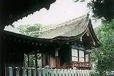
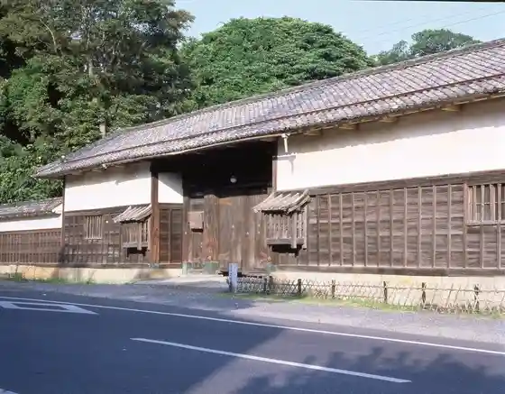
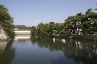

Chiyo Shrine
Hikone, Shiga · 0749-22-1237 · Official / source link

Kyunishi Sato Yashiki Nagaya Mon Sodebei Yakui Mon
Hikone, Shiga · Official / source link

Hikone Takei Shima Koro (Omimarin)
Hikone, Shiga · 0749-22-0619 · Official / source link
Iroha Matsu
Hikone, Shiga · 0749-23-0001 · Official / source link

Muneyasu Tera
Hikone, Shiga · 0749-22-0801 · Official / source link
Shichi Magari no Butsudan Machi
Hikone, Shiga · 0749-23-0001 · Official / source link
Biwakotsurizumubesu Hikone Ine Eda Mise
Hikone, Shiga · Official / source link
Chokyu Tera
Hikone, Shiga · 0749-22-0914 · Official / source link
Omimarin Hikone Minato (Mifune In Dairoku Shichi Ban Sha)
Hikone, Shiga · Official / source link
Umeki Sha
Hikone, Shiga · 0749-23-5268 · Official / source link
Toyotarentariisu Shiga Hikone Mise
Hikone, Shiga · 0749-27-0100 · Official / source link
Ryu Tan Tera
Hikone, Shiga · 0749-22-2777 · Official / source link
JR Hikone Eki
Hikone, Shiga · Official / source link
Hikone Kyassuru Resort & Supa
Hikone, Shiga · 0749-21-2001 · Official / source link
Seiryo Tera (Hikone)
Hikone, Shiga · 0749-22-2776 · Official / source link
Ryotei Ryokan Yasu I
Hikone, Shiga · 0749-22-4670 · Official / source link
TOYOTA SHARE Toyotarentaka Hikone Mise
Hikone, Shiga · 0800-666-2077 · Official / source link
Sho Sakai Park
Hikone, Shiga · Official / source link
Sen Rin Tera
Hikone, Shiga · 0749-23-9877 · Official / source link
Ohora Benzaiten (Chojuin)
Hikone, Shiga · 0749-22-2617 · Official / source link
Kyu Torii Motojuku
Hikone, Shiga · 0749-22-1411 · Official / source link
Hikone Supotsu Bunka Koryu Center
Hikone, Shiga · Official / source link
Hana no Shogai no Hi (Hikone Shiro Kinkame Jido Park)
Hikone, Shiga · 0749-22-2742 · Official / source link
Hikone City Bunka Plaza
Hikone, Shiga · 0749-26-8601 · Official / source link
Gokuraku Yu Hikone Mise
Hikone, Shiga · 0749-26-2926 · Official / source link
Genkyu Rakuraku Sono (Genkyu Sono)
Hikone, Shiga · 0749-22-2742 · Official / source link
Omitetsudo
Hikone, Shiga · 0749-22-3301 · Official / source link
Shiro Town (Kyu Sakanaya Town)
Hikone, Shiga · 0749-22-1411 · Official / source link
Zenri Kumi Ashigaru Kumi Residence
Hikone, Shiga · 0749-23-0001 · Official / source link
Omi Ushi Resutoran Sennari Tei
Hikone, Shiga · 0749-24-6129 · Official / source link
Kyu Ikeda Yashiki Nagaya Mon
Hikone, Shiga · 0749-26-5833 · Official / source link
Hikone Rentasaikuru
Hikone, Shiga · Official / source link
Hikone Shiro
Hikone, Shiga · 0749-22-2742 · Official / source link
Tennei Tera (Gohyaku Rakan)
Hikone, Shiga · 0749-22-5313 · Official / source link
Hikone Takeo Shima Koro (Omimarin)
Hikone, Shiga · 0749-22-0619 · Official / source link
Yume Kyobashi Kyassururodo
Hikone, Shiga · 0749-23-0001 · Official / source link
Hikone Shiro Museum
Hikone, Shiga · 0749-22-6100 · Official / source link
Shingonshu Omi Taishi Tera (Hikone Ekimae no Hironori San)
Hikone, Shiga · Official / source link
Rentasaikuru (Eki Rin Kun) Hikone Mise
Hikone, Shiga · 0749-27-0761 · Official / source link
Gurasusutajio Sutera G.
Hikone, Shiga · Official / source link
Serikawa Tsutsumi
Hikone, Shiga · 0749-23-0001 · Official / source link
Mei Sho Tera
Hikone, Shiga · 0749-22-1776 · Official / source link
Sawa Yama Castle Ruins
Hikone, Shiga · Official / source link
Sukasshu Club Jieikoto
Hikone, Shiga · 0749-21-5653 · Official / source link
Kyuko Miyajuku
Hikone, Shiga · 0749-23-0001 · Official / source link
Hikone Shiro O Hori Meguri
Hikone, Shiga · 080-1461-4123 · Official / source link
Hikone Sukaiadobencha
Hikone, Shiga · Official / source link
Takei Shima
Hikone, Shiga · 0749-23-0001 · Official / source link
Hikone Yakusho
Hikone, Shiga · 0749-22-1411 · Official / source link